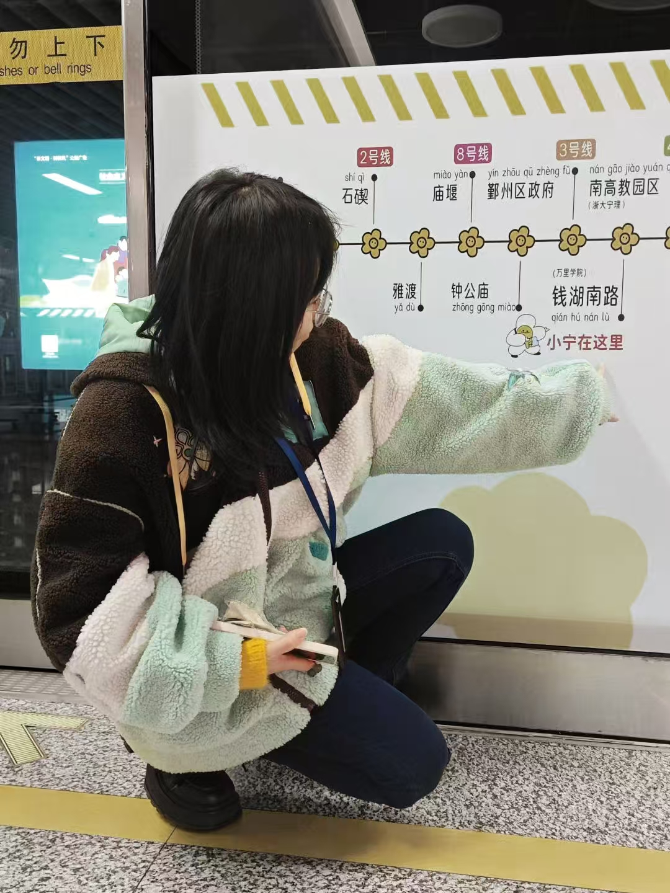

Ningning Xu
Creative Researcher Developer Designer
-
01
🎓 Congratulations to my undergraduate students for their graduating!
-
02
🎉 I am now passing the Ph.D viva examination with minor revisions!
-
03
🔬 I have set up my own laboratory named BUXR Lab in ZWU.
Hello there! I am Ningning Xu. I am a researcher, and I'm very passionate and dedicated to my work.
Bio: Ningning Xu is currently an Assistant Lecturer at Sino German Faculty of Branding, and a Ph.D. candidate at the University of Nottingham, Ningbo. She received her master's degree at Xi’an Jiaotong-Liverpool University. Her research interests focus on AR, VR, InfoVis, and GenAI. Her work has been published and recognized at top-tier venues in human-computer interaction (HCI), such as IJHCI, CHI, ISMAR, JOCCH and so on. She has led more than ten projects in the past three years, with over 20 competition awards, over 20 publications and over 10 patent submissions. Her research has been supported by Li Dak Sum Innovation Fellowship.

-
2022 – 2026
University of Nottingham Ningbo China
Ph.D. in Industrial Design (Joint with Zhejiang University) -
2020 – 2022
Xi‘an Jiaotong-Liverpool University
M.Sc. Applied Informatics (Distinction) -
2016 – 2020
Northwood University
BBA. Management Information System (Joint with Jiangnan University)
-
2025 – present
BUXR Lab, Sino-German Faculty of Branding
Founder -
2023 – present
Sino-German Faculty of Branding, Zhejiang Wanli University
Assistant Lecturer -
2023 – 2025
Rosy Nebula Information Technology Co., Ltd
Technical Adviser -
2020 – 2022
Xi‘an Jiaotong-Liverpool University
Research & Teaching Assistant
- China National Arts Fund (Member, 2,000,000 RMB, 2026-2028)
- Zhejiang Province New Talent Project (Supervisor, 10,000 RMB, 2026-2027)
- Li Dak Sum Innovation Fellowship (PI, 78,799 RMB, 2023-2024)
- UNNC PhD Scholarship (Tuition waiver + 162,000 RMB, 2022-2025)
- National Innovation Program (Supervisor, 10,000 RMB × 2, 2024-2026)
- AR-Based Cultural Interaction Method, Installation and Medium (ZL 2024 1 1159364.4)
- Interactive Installation for AR-Based Cultural Scenarios (ZL 2024 2 2193438.8)
- VR-Based Musical Interaction Method and System (ZL 2024 1 1658261.2)
- VR-Based Emotional Intervention Method and System (ZL 2024 1 1536070.9)
- [Supervisor] ChinaVis Data Challenge – 2nd Prize, 2026
- [Supervisor] ACM CHI Student Design Competition – Finalist, 2025
- [Supervisor] ICVRV China Competition VR – 1st Prize, 2024
- [Supervisor] ICVRV China Competition VR – 2nd Prize, 2024
- [Supervisor] ChinaVis Data Challenge – 2nd Prize, 2024
- [Individual] UNNC 2nd DTP Symposium – Best Oral Presentation, 2024
- [Supervisor] ACM CHI Student Design Competition – Finalist, 2024
- [Supervisor] Milan Design Week – 3rd Prize, 2024
- [Leader] ChinaVis Data Challenge – 1st Prize, 2023
- [Leader] ACM CHI Student Design Competition – Finalist, 2023
- [Leader] ACM MobileHCI Student Design Competition – Finalist, 2022
- [Member] ChinaVis Data Challenge – 2nd Prize, 2022
- [Leader] China Commercial Passwords Exhibition – 2nd Prize, 2021
- [Leader] ICVRV China Competition VR – 1st Prize, 2021
- [Member] ChinaVis Data Challenge – Merit Prize, 2021
- [Member] Hong Kong BAPTIST Data Media Hackathon – Merit Prize, 2020
- [Individual] Jiangnan University CTF – 3rd Prize, 2017
- VR-Based Memory Training Approach, System, and Method (App. No. 202512058524.7)
- VR-Based Emotional Visualization Interactive Method and System (App. No. 202511137514.6)
- VR-Based Musical Performance Interaction Method and System (App. No. 202510519721.1)
- AR-Based Museum Guide Interaction Method and System (App. No. 202610390054.6)
- VR-Based Perfume Making Interactive System (App. No. 202610466555.8)
- VR-Based Perfume Making Approach and System (App. No. 202610466889.5)
- Digital Character Design Customization Method based on Culture (App. No. 202610953192.0)
- AR-Based Anti-motion Sickness Method and System (App. No. Pending)
I lead the Bridge User eXperience & Reality Lab (BUXR Lab). It is a human-computer interaction laboratory dedicated to user-centered design, cross-platform immersive experiences, and research in extended reality (XR), data visualization, and artificial intelligence. We are interested in designing, developing, and evaluating user interfaces and interaction techniques to help users solve their challenging problems in everyday life. Student members have successfully published and presented their work in top-tier HCI conferences. BUXR Lab is a passionate research team with motivated undergraduate students. As follows, most of them are admitted to famous universities for further study.

-
My students present our work, LociVR and Trajectory of Relics in oral and poster presentation at ISMAR Conference.
My first onsite ISMAR with students
2025 -
I present my projects, Livehouse VR and AritfactShow in student design competition and late-breaking work at CHI Conference.
My first onsite CHI
2025 -
I present my phd project, LanternOperAR and obtain the best oral presentation at UNNC Doctoral Research Symposium.
My first award
2024 -
I introduce my master project, CubeMuseum AR in poster presentation at XJTLU Postgraduate Research Symposium.
My first onsite symposium
2021
-
 Qianhu Road,
Qianhu Road,
Ningbo, China -
 ningning.xu@zwu.edu.cn
ningning.xu@zwu.edu.cn
axiosly@gmail.com -
ID: 1545387923
BUXR Lab